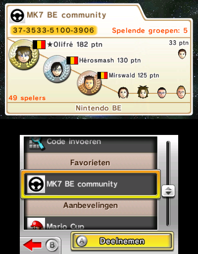

Mario Kart
As for gaming, I'm a big Mario Kart fan, more specifically the Wii version. When people introduce me to others, Mario Kart is usually said within the same breath!
I joined the Mario Kart community back in thye Summer of 2009 as I created my Youtube channel then.
Currently I'm ranked #1 of Belgium in Mario Kart Wii, and have had the title of Belgian Mario Kart Champion a few time over the past years officially recognized by Nintendo Benelux, which I'm particularly proud of! You can find me on the Time Trail rankings on Mario Kart Players Page, Mario Kart World Records and Mario Kart Leaderboards. I time trail other Mario Kart games too, but primarily Mario Kart Wii.
Real Life Tournaments
#1 in Mario Kart 7 Gameland 2012 at Bobbejaanland by Nintendo Benelux
This was my first Mario Kart tournament ever. This was a random Mario Kart 7 tournament organised by Nintendo Benelux at Bobbejaanland during the Game Land event. Game Land was an annually gaming event of Bobbejaanland, usually helt during the first half of September where the whole amusement park turns into a gaming convension where Nintendo and other big companies show off their newest games.
The rules of the tournament were non-standard. You weren't allowed to chose your vehicle and character combo
and the only track you could play was Toad's Circuit. They handed you a 3DS with the combo set already.
The best combo that was available I remember was Bowser on the Bee kart with the blue monster wheels, haha!
You played one race and then the top 4 advanced to the next round.
It was like this for the whole tournament, including the final round.
There weren't any notable players participating, only casual players and some that somewhat knew how to drive, so not too much competition here. The price was a Trophy representing the ingame Special Cup trophy wich can be seen in the banner picture of this page.
Sadly I don't have proof for my result, I have three pictures left taken near the tent where the tournament took place, but no podium picture and/or post by Nintendo announcing this tournament.
(Photo 1,
Photo 2,
Photo 3)

#1 in Mario Kart 7 Tour 2013 at Antwerp by Nintendo Benelux
This was a Mario Kart 7 tournament organised by Nintendo Benelux in Antwerp. This tournament was part of the Mario Kart 7 Tour Belgium 2013 tournament. This is how it worked; Over the whole year there would be a local tournament helt in 8 big cities in Belgium. The winner of each tournament would get a free ticket to Bobbejaanland where the finals would be played. This particular tournament was the one helt in Antwerp.
The rules of the tournament were a bit better. You could use your own 3DS and your own character/vehicle combo, though the tracks were only Mushroom Cup tracks.
If I remember correctly, the pre-rounds were 2 races (Toad's Circuit and Daisy Hills), top 4 advances and the finals were the whole Mushroom Cup.
This time one notable players participated, namely Dash Emeth who I knew from the Mario Kart community, and who I'll be facing many more times to come in other tournaments!
Other than that, I brought two school friends with me to play along and the other participants were just casual players. So, like last tournament, not too much competition here.
Especially since Emeth already won a tournament in one of his close-by cities, so he had a free ticket already anyway. If I had gotten second place and Emeth first, I still would have received a free ticket to the finals.
The price was, like last tournament, a Trophy representing the ingame Special Cup trophy wich can be seen in the banner picture of this page.

Left is a random player, middle is me and right is Emeth.
#2 in Mario Kart 7 Tour 2013 at Bobbejaanland by Nintendo Benelux
This was the finals of the Mario Kart 7 Tour Belgium 2013 tournament organised by Nintendo Benelux in Bobbejaanland. The tournament was held, like last time in Bobbejaanland, during the Game Land gaming event. Nintendo had a booth with lots of Nintendo games, mostly focussed on the newest 3DS games at the time.
The rules were very good this time. You could use your own 3DS, chose your character/vehicle combo and also you could chose what track you want to play and the game would randomly chose what track to play from the selected bunch, exectly like how it works in online rooms. I don't remember all the tracks we played, but I remember playing Wario's Shipwreck and Neo Bowser City.
This tournament was realy cool and competitive this time! Quite many notable players participated for a local tournament.
Dash Emeth was there ofcourse, but this time he brought one of his teammates with him; Dash ProF who was the winner in another city so he participated too. He's more know for his skills in Smash Brothers, but he's still very competent in Mario Kart. I know him via Mario Kart Wii too.
A player called SharkOfDark was also present. He was an active player in WW's (Worldwide's, a term for online races) but not too much in Time Trails. He was a great player and definitely on equal footing as me in terms of pure online skills. He definitely was the toughest opponent.
Another player called DarkSilver sadly did not make it to the finals as he got 2nd place in the tournament where SharkOfDark got 1st place for his spot in the finals. They're both friends of the same highschool, which is pretty cool! DarkSilver was mainly a Time Trailer, but also a great online player. Would have been awesome to have met him.
Last, but definitely not the least notable player, if not THE most notable is Negens. He's a very well known Mario Kart player, mainly made his name in the Mario Kart Wii community for playing in the highest competitive division at the time when he played actively and was widely regardes as the best Belgian Mario Kart player. His skills on Mario Kart 7 didn't transfer over as wel as his Mario Kart Wii skills, so for me he wasn't the biggest threat, but for sure the second biggest.
The other three players of the finals weren't anything special, just casual players who just ended up getting into the finals. They did knew how to drive decently, but nothing compared to actual competitive players.
In the end I got 2nd place overall. Really happy I was able to end up on the podium as my item luck was quite against me. SharkOfDark was able to run in 1st place most races without much trouble while I was stuck in the pack trying to catch up, haha! Again, another congratulations to SharkOfDark! Well played, man!
This time only first place received a price, which was if I remember correctly also another Special Cup trophy and also a free 3DS with a copy of Mario Kart 7.
You can find all the history of the Mario Kart 7 Tour tournament on its Facebook page.

Left is Dash Emeth, middle is SharkOfDark and right is me.
#1 in Mario Kart 7 Online BE Community Tournament 2013 by Nintendo Benelux
The official post of Nintendo Benelux can be found here.
The post on Facebook of this result can be found here.
#1 in Mario Kart 7 Japan Expo Belgium Final at Japan Expo Brussels by Nintendo Benelux
A reference to the results articel can be found here, but as you can see the articel is sadly down. This is all what remains of what the tournament was: Photo.